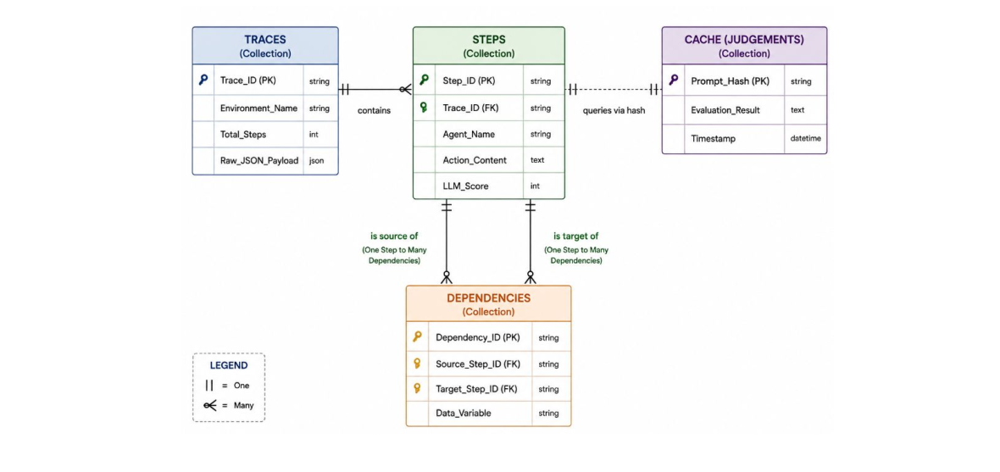

↳ Deep dive · Stage 03 of 05 · Report §4.1 Alg. 3 · FR-08/09
A trace is not a straight line — agents pass variables across non-adjacent turns and reply to each other's messages. The DependencyLinker rebuilds that hidden plumbing as a NetworkX directed acyclic graph, so the traversal in stage 04 walks causality instead of recency.
↳ What it does
Sequential turns are always linked; semantic links are earned by evidence — a shared identifier or an explicit reply.
↳ How it works
If step 7 writes total_revenue and step 14 reads it, an edge exists — no matter how many turns sit between.

Turn i−1 → i always gets an execution_flow edge at confidence 0.85 — conversation order is evidence, just weak evidence.
Identifiers matching \b[a-z_][a-z0-9_]{3,}\b are extracted per step, stopwords removed, and overlaps become shared_state edges at confidence 0.95 with the token list attached.
Direct recipient mentions create message_reply edges — the agent equivalent of quoting someone.
dag = nx.DiGraph()
for i in 1..N-1:
dag.add_edge(i-1, i, type="execution_flow", confidence=0.85)
for u < v:
overlap = entities(u.payload, u.state) ∩ entities(v.context)
if overlap:
dag.add_edge(u, v, type="shared_state", confidence=0.95)
# + message_reply edges on recipient mentions
Sequential adjacency baseline weight.
Matched identifiers outweigh adjacency.
execution_flow · shared_state · message_reply.
Constraint for traces up to 1,000 steps.